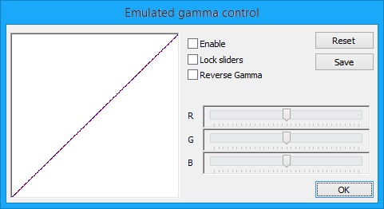

This window allows you to change the gamma ramp values for the windowed program. Currently works for ddraw rendering (setting the "DirectX2/Enable gamma ramp emulation" flag) or d3d lights (setting the "Direct3D/Enable light gamma ramp" flag)
Examples of use:
Some fullscreen games may rely on gamma control to set a dark enough environment in order to have an immersive atmosphere. But hardware gamma control affects the whole screen, so it may be inconvenient to change the gamma ramp values for the surrounding windows and other desktop elements. So, disabling hardware gamma control result in a less immersive game and emulated gamma control can recover the effect. Even when the game doesn't set a custom gamma control, if it is darker than the surrounding desktop it will turn out much less visible than in fullscreen mode. Again, emulated gamma control can compensate.
NOTE: You can save your custom gamma ramp values to dxwnd.ini so that the stored values will be loaded automatically and applied to programs flagged to use the virtualized gamma ramp.